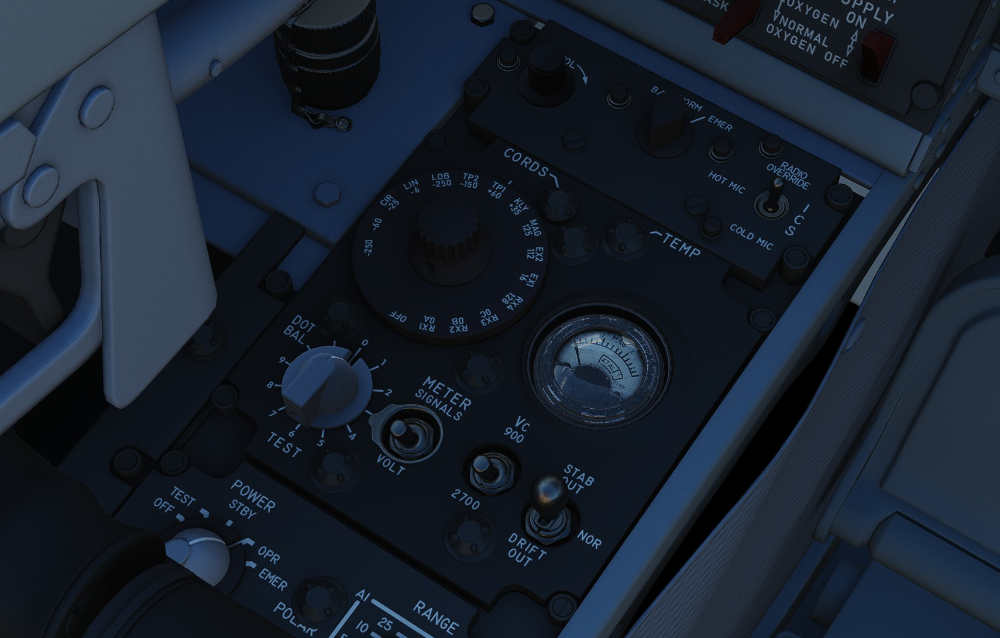
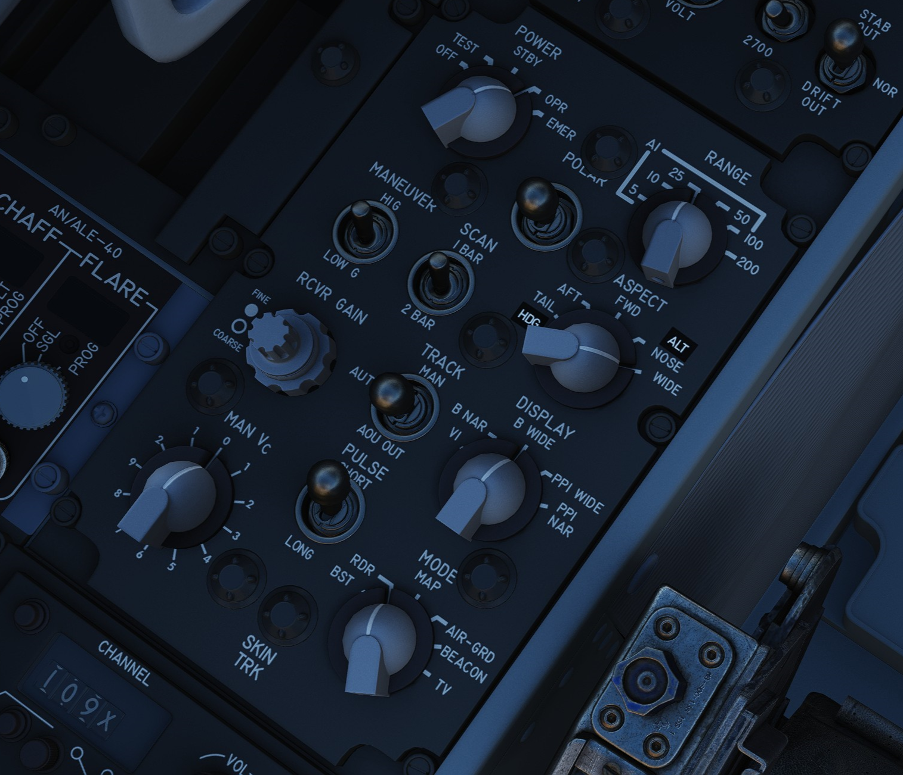

Left Console
Intercom Control Panel

WSO ICS Volume Control Knob
Turned clockwise to increase audio between cockpits, and counterclockwise to decrease audio between cockpits on the intercom.
WSO ICS Function Selector Switch
| Name | Description |
|---|---|
| COLD MIC | Mic switch on throttle must be held to activate intercom. |
| HOT MIC | Voice automatically transmitted on intercom. |
| RADIO OVERRIDE | The opposite cockpit’s audio is heard at its set volume using its amplifier. |
WSO ICS Amplifier Select Knob
Determines current amplifier for intercom function.
| Name | Description |
|---|---|
| B/U | Backup headset amplifier provides audio. |
| NORM | Primary headset amplifier provides audio. |
| EMER | Uses amplifier from opposite cockpit; only audio received to that cockpit is heard. |
Control Monitor Panel

Cords Light
Not used by the APQ-120 in the F-4E.
Temp Light
Illuminates amber to indicate an overtemperature situation in the nose radar avionics bay. Under normal circumstances, an overheat condition requires setting the radar power to OFF. If circumstances require continued use, the light should be monitored regularly.
Test Knob
An eleven position rotary knob used with the radar power knob in TEST to perform system BIT checks of the APQ-120 radar. Basic test function noted below; procedural functionality is found in the applicable BIT test section.
| Name | Description |
|---|---|
| 0 | Displays standard B scope presentation to confirm all elements functioning correctly. |
| 1 | Confirms break lock timing delay, AIM-7 tuning status, and Range lamp status function. |
| 2 | Confirms proper AIM-7 head position aim and SHORT pulse function against two targets. |
| 3 | Confirms angle tracking performance against a locked target that rotates inside ASE circle. |
| 4 | Used while lock achieved in another mode, confirms HOJ and AOJ functionality. |
| 5 | Checks range rate, lead angle, CAA, and PLMS function. |
| 6 | Confirms proper AIM-7 attack display and interlock function. |
| 7 | n/a |
| 8 | n/a |
| 9 | n/a |
| 10 | n/a |
| DOT BAL | Confirms AIM dot centering calibration. Also used for TIRS data transfer. |
Meter Switch
Determines which set of values are utilized from the Meter Selector Knob for the applicable test sequences; VOLT selects the inner ring of Voltage referencing values, whereas SIGNALS uses the outer rim of SIGNAL reference values.
Meter Selector Knob
A sixteen position rotary knob used in conjunction with the Test Knob, with each position having two values- an outer SIGNAL value, and an inner VOLT value. Selection of which value determined by the Meter Switch.
Monitor Meter
Provides voltage, current, and signal indications based on current Meter Switch and Meter Selector Knob settings.
Vc Switch
Changes the scale factor of the range rate presentation. DSCG aircraft must leave the switch in 2700, else the Vc presentation will be in error.
Stab Switch
Changes the antenna stabilization mode.
| Name | Description |
|---|---|
| NOR | Normal operation; inputs of pitch and roll are fed to the antenna stabilization circuit. |
| STAB OUT | Horizon line removed from scopes and stabilation drift servos are zeroed. |
| DRIFT OUT | INS drift compensation is removed; antenna uses direct pitch and roll input tracking. |
Radar Set Control Panel

Power Knob
Five position rotary switch controlling power state of the APQ-120
| Name | Description |
|---|---|
| OFF | Powers radar off. |
| TEST | Applies voltage to control monitor power and provides test functions 1 through 6. |
| STBY | Power applied to radar, remains in a non-transmitting standby state. |
| OPR | System is fully operational. |
| EMER | Overrides the time delay, pressure, and temperature restrictions to allow radar operation. |
Polar Switch
Controls polarization of transmitted rf energy.
| Name | Description |
|---|---|
| LIN | RF energy is linerally polarized in a vertical orientation. AIM-7 default mode. |
| CIR 1 | RF energy is rotated clockwise from the vertical plane. AIM-7 can be fired. |
| CIR 2 | RF energy is rotated counterclockwise from the vertical plane. AIM-7 cannot be fired. |
Radar Range Knob
Used to select range sweep of 5, 10, 25, 50, 100, or 200 mile ranges on both radar displays. First four ranges are air to air intercept positions, final two are ground mapping modes only, and disengage lockon capability. Selecting a setting illuminates the applicable range lamp, and displays the value on the radar scope upper left corner.
Maneuver Switch
Controls radar tracking response due to acceleration limits and received countermeasures and clutter.
| Name | Description |
|---|---|
| Low G | Default position. Limts track response due to countermeasures and clutter. |
| HI G | Allows track loop to respond to high acceleration. Automatically engaged with CAA. |
Bar Scan Switch
Selects elevation scan pattern. In 2 bar scan, search pattern is separated by 3.75 degrees on each scan. In boresight or air to ground modes, 1 bar scan is automatically commanded.
Aspect Switch
Used to program the AIM-7 with a predetermined simulated Doppler instead of actual received Doppler, so that the WSO can provide an estimated correct speedgate location when range isn't available.
Receiver Gain Knobs (RCVR GAIN)
Coarse (outer ring) and Fine (inner knob) gain control for the radar scope display to increase video output legibility of target returns.
Track Switch
Enables manual target tracking in heavy clutter environments, or automatic tracking under normal circumstances.
Manual
When in the MAN position, the WSO places the acquisition symbol over the intended target and triggers half-action on the HCU. The range strobe is positioned relative to in-range on a closing target, and the WSO selects full-action. To solidify the track, the WSO uses the Manual Vc knob to place the range strobe and target return video at the same rate of movement.
Automatic
In the AUTO position, the range and closure calculations are performed automatically. The WSO places the acquisition symbol over the target return and presses full action. Should the target maneuver in excess of the speed capability of the radar, the Maneuver switch can be set to HI G and the target reacquired.
AOJ OUT
The AOJ OUT position is used to override the acquisition on jamming function of the radar. In the event that the radar acquires a HOJ lock, the position can be selected to place the radar back into a search configuration to initiate a lockon against the jamming target and initiate a standard angle track lock.
Display Knob
Sets the display type of the radar scope to access specific mode functionality in conjunction with the Mode knob. The types are as follows:
| Name | Description |
|---|---|
| B WIDE | Selects 120 degree B-sweep for search. Half-action places the sweep under manual HCU. |
| B NAR | Selects a 45 degree B-sweep sector for search, which is manually shifted with the HCU. |
| PPI WIDE | Selects a 120 degree wide plan position indicator sweep for MAP mode. |
| PPI NAR | Selects a 45 degree plan position indicator sweep that can be shifted with the HCU. |
| VI | Provides pure pursuit guidance to a locked target; a break X will appear at 1000' range. |
Maneuver Vc Knob
An 12 position switch used to apply estimated range rate of closure (clockwise, 0-9), or estimated opening of range (counterclockwise, 0-2) against a target in manual track mode.
Pulse Switch
Three position switch controlling radar pulse width and pulse repetition frequency in the Air to Air radar search modes. With the APQ-120 placed in CAGE mode, short pulse operation is automatically selected. In AIR-GND modes, the pulses are automatically commanded, deactivating the switch.
| Name | Description |
|---|---|
| AUTO | Commands long pulse width and low PRF; pulse width handled automatically when target is locked. |
| LONG | Low PRF and wide pulse width, allowing maximum range detection; no track automatic pulse adjustment. |
| SHORT | Narrow pulse width with high PRF for increased close range performance. |
Mode Knob
A six position switch that determines the current base mode of operation of the radar.
| Name | Description |
|---|---|
| BST | Air to Air boresight with antenna aligned to optical sight. Permits CAGE and CAA. |
| RDR | Air to Air search mode. |
| MAP | Radar ground mapping mode. |
| AIR-GRD | Air to Ground boresight, 20 mile range against targets visually established with optical sight. |
| BEACON | Radar receives and displays signals from ground or airborne beacon transponders for navigation. |
| TV | Not used with DSCG. Deactivates AIM-7 if selected. |
Skin Track Light
Green lamp that illuminates when a track is attained with range data. In the event of HOJ or a range memory situation, the light will go off. Accompanied on the rear DSCG radar scope with the T symbol that illuminates under the same circumstances.
TACAN Control Panel

The TACAN Control Panel is used to enter the desired TACAN channel, mode, and audible volume for the monitoring of said channel by the aircrew. The panel is duplicated in both cockpits, and the panel in command of the TACAN receiver is selected with the NAV CMD button the Communication Control Panel.
On the control panel is found two Navigation Channel Control knobs, with the left controlling the first two digits of the channel value (hundreds and tens), and the right controls the single unit (ones) values. The right knob also includes an outer ring which sets the X or Y value for the desired TACAN channel.
Between these two knobs is the TEST button, which performs the ground testing cycle after warmup, and can also be used to perform an in-flight confidence test of the system's performance.
To the upper right, the VOL knob is available to set the desired audio level for the received TACAN station.
The TACAN Function Selector Knob determines the presentation and type of information provided on the HSI, ADI, and BDHI, respectively.
| Name | Description |
|---|---|
| OFF | The TACAN receiver is deenergized and offline. |
| REC | The TACAN receiver is active, providing bearing information on the HSI, BDHI, and ADI. |
| T/R | Both the receive and transmit functions of the TACAN are active, which provide bearing and nautical mile range information for the HSI and BDHI. |
| A/A REC | The TACAN receiver decodes bearing information from compliant aircraft for the HSI, BDHI, and ADI steering display. |
| A/A TR | The TACAN receiver receives both bearing and slant range information in nautical miles from the transmitting aircraft, providing this on the HSI and BDHI. |
Note: Air to Air TACAN functionality requires the channel to be set 63 channels above or below the cooperating aircraft, but on the same range- X or Y.
Communication Control Panel

The Communication Control Panel provides selection and mode of the UHF radio in the aircraft. The panel is duplicated in both cockpits, and control over the radio is determined through pushing the COMM CMD Button in the respective seat; the button will illuminate green in the seat in priority. In the same fashion, the NAV CMD button dictates which seat has control of the TACAN settings; its button will also illuminate in the seat in command of the system.
Beneath the COMM CMD button is the radio volume for the respective seat. Adjacent to the NAV CMD button is the Squelch switch, which enables or disables receiver squelch.
The A-3-2-T Selector knob sets HAVE Quick functionality of the UHF radio (A- auto-jam), the first digit of the manually selected frequency (3 or 2), or enables Time of Day receipt for one minute after selection in a momentary hold position (T).
The four Frequency Selection Knobs work in concert with the A-3-2-T knob and Preset/Manual switch. Frequencies are entered beginning with the 3 or 2 selection on the A-3-2-T Selector, and can be entered from 225.00 to 399.975 MHz in increments of 0.025. With Preset/Manual in the Manual position, the UHF radio is directly set to the displayed channel. In the Preset position, the set channels can entered into the COMM CHAN memory, with the desired position selected with the Comm Channel Control knob- the smaller knob to the left of the Preset/Manual switch, and displayed in the COMM CHAN window. Channels are stored in the displayed channel preset with the SET pushbutton. Once stored, channels are directly selected using the Comm Channel Control knob with the Preset/Manual switch in the Preset position.
The Tone Pushbutton is used for transmission of a TOD signal along with a tone to friendly aircraft requiring a Time of Day update for proper HAVE Quick functionality. It is also used to activate the emergency TOD clock for the radio itself, in conjunction with the T position of the A-3-2-T knob. Selecting the T position and pushing the Tone button will cause the radio to listen for a TOD signal from another friendly transmitter to synchronize the anti-jam function with the desired network.
Directly underneath the Comm Channel Control Knob is the Aux Channel Knob and Indicator. This knob is used to access 20 common preset channels that cannot be changed from in the cockpit.
The Comm Function Selector Knob determines the current configuration of the radio system.
| Name | Description |
|---|---|
| OFF | All UHF Radios off. |
| T/R ADF | Comm receiver - comm reception. |
| Comm transmitter - comm transmission. | |
| Comm guard receiver - standby. | |
| Aux receiver - ADF reception. | |
| T/R+G ADF | Comm receiver - comm reception. |
| Comm transmitter - comm transmission. | |
| Comm guard receiver - guard reception. | |
| Aux receiver - ADF reception. | |
| ADF+G CMD | Comm receiver - ADF reception. |
| Comm transmitter - comm transmission. ADF interrupted during transmission. | |
| Comm guard receiver - guard reception on ADF antenna. | |
| Aux receiver- comm reception. | |
| ADF+G | Comm receiver - ADF reception. |
| Comm transmitter - comm transmission. ADF interrupted during transmission. | |
| Comm guard receiver - standby. | |
| Aux receiver- guard reception. | |
| Guard ADF | Comm receiver - guard reception. |
| Comm transmitter - guard transmission. | |
| Comm guard receiver - standby. | |
| Aux receiver - ADF reception. |
The Aux Volume Control knob raises and lowers the volume of the Aux receiver channel.
AN/ALE-40 Cockpit Control Unit

Ripple Switch
When positioned ON, dispenses flares at rate of ten per second until dispensers are empty, so long as flaps and speed brakes are retracted.
Dispense Button
Initiates chaff/flare dispensing as selected by CCU and ALE-40 programmer with flaps and speed brakes retracted and mode knobs out of OFF.
Counters
Indicate quantity of chaff and flare cartridges remaining, respectively. If slave dispenser is set to Chaff Double (CD), the chaff counter will display half of the number of cartridges remaining.
Chaff Mode Knob
| Name | Description |
|---|---|
| OFF | Chaff system inactive. |
| SGL | A single burst commanded when dispense button pressed. |
| MULT | A salvo commanded according to program when either dispense button pressed. |
Flare Mode Knob
| Name | Description |
|---|---|
| OFF | Flare system inactive. |
| SGL | A single burst commanded when dispense button pressed. |
| MULT | A salvo commanded according to program when either dispense button pressed. |
Indicator Lights
Illuminates whenever a mode is selected on the respective countermeasure mode knob.
LABS Panel

Aural Tone Volume
Knob to control the volume for weapon tones, such as the Sidewinder seeker head.
Pull Up Tone
Switch to toggle the tone played by the Pull-Up system.
Pressure Altitude Indicator
Liquid Oxygen Level Indicator
Range from 0 to 10 liters, providing confirmation of current liquid oxygen status. In event power is lost, a "power off" flag will show on the instrument face.
VOR/ILS Volume Control
The volume control consists of two knobs: one square knob adjusts VOR and localizer audio, while the round knob controls the marker beacon audio.
WSO Emergency Flaps Handle

Used for emergency deployment of the slats and flaps from the rear cockpit, and is activated by pulling the handle aft. Pneumatic system powering extension of the slats flaps system only functions one time. Extend regardless of airspeed, however flaps will not fully deploy above 230 knots due to air loads on control surfaces. Will deploy fully when slower.